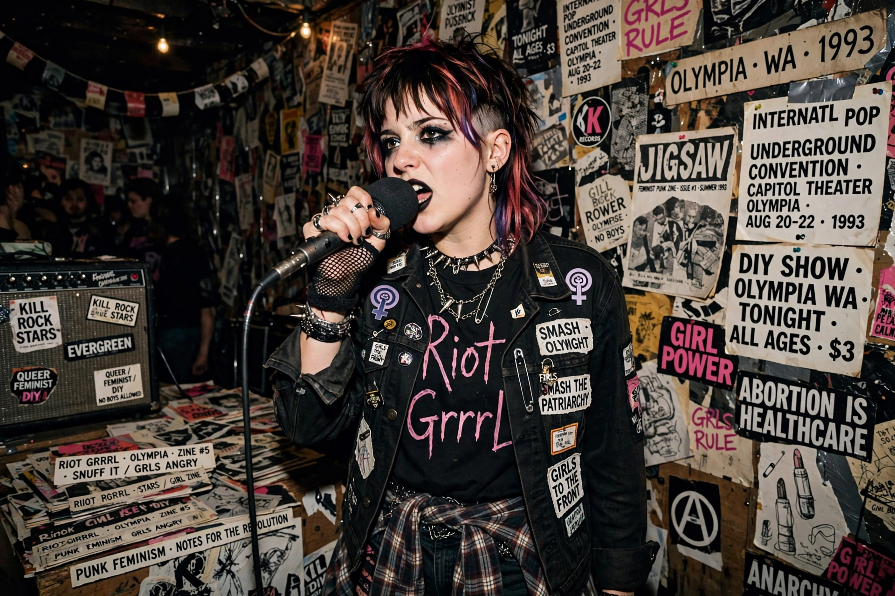

Riot grrrl is an underground feminist punk movement that began during the early 1990s within the United States, in Olympia, Washington, and the greater Pacific Northwest. It also expanded to other countries before its original form waned in the mid-1990s; a revival emerged in the 2010s.

Riot grrrl combined feminist consciousness with punk politics and style, encouraging women to form bands, publish zines and hold meetings. Central bands included Bikini Kill, Bratmobile, Heavens to Betsy, Huggy Bear and later Sleater-Kinney. Kathleen Hanna popularised slogans such as "girl power" and wrote the Riot Grrrl Manifesto (1991), published in the zine Bikini Kill.
Fanzines — photocopied, hand-made publications — spread the movement's ideas about sexuality, abuse, empowerment and racism, and local chapters held women-only meetings. Labels such as Kill Rock Stars and K Records documented the scene.
The movement was criticised for centring white, middle-class perspectives. Its influence persists in DIY feminism, later punk, and revivals including the Russian collective Pussy Riot, who cite riot grrrl as an inspiration.